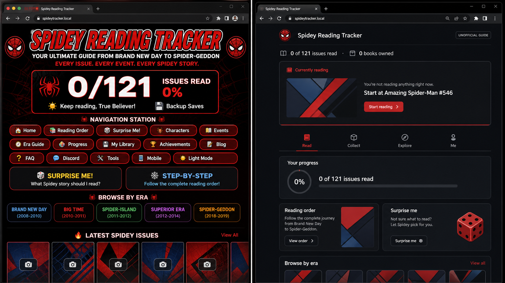
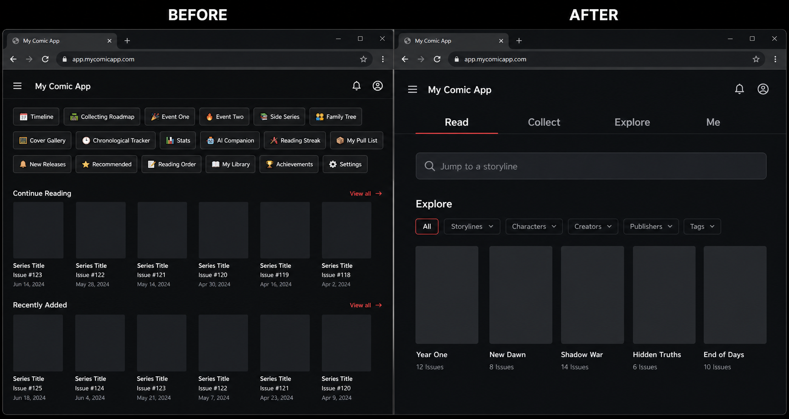
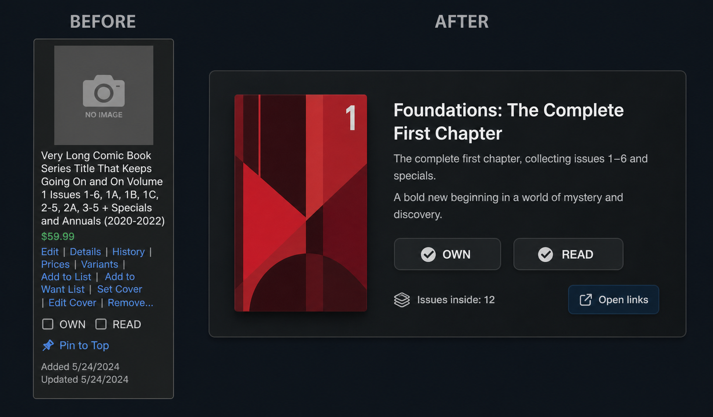
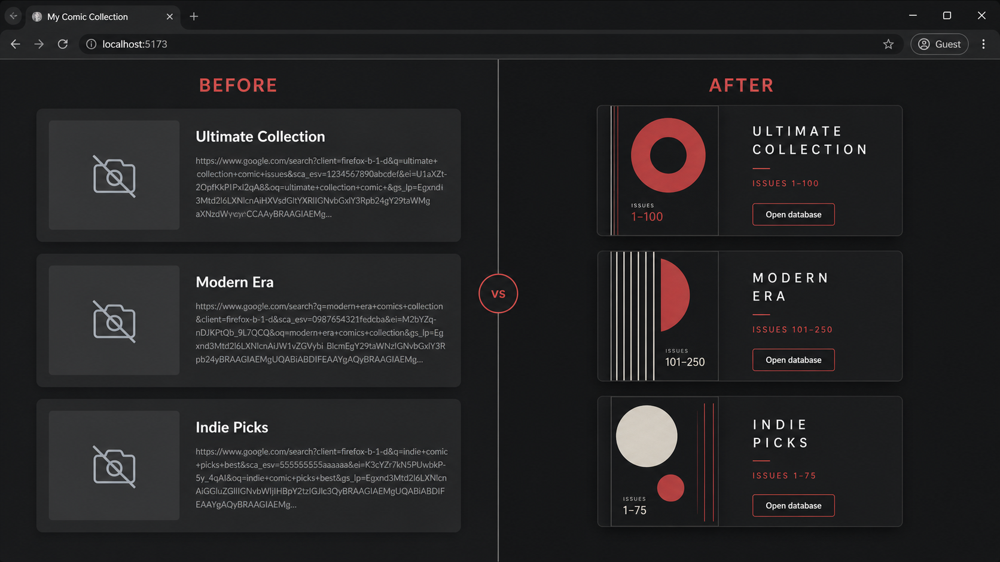
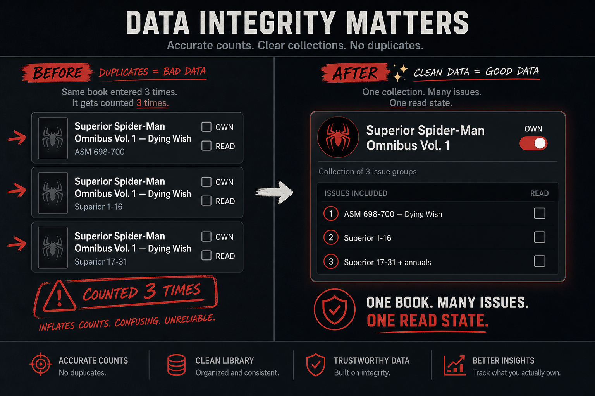
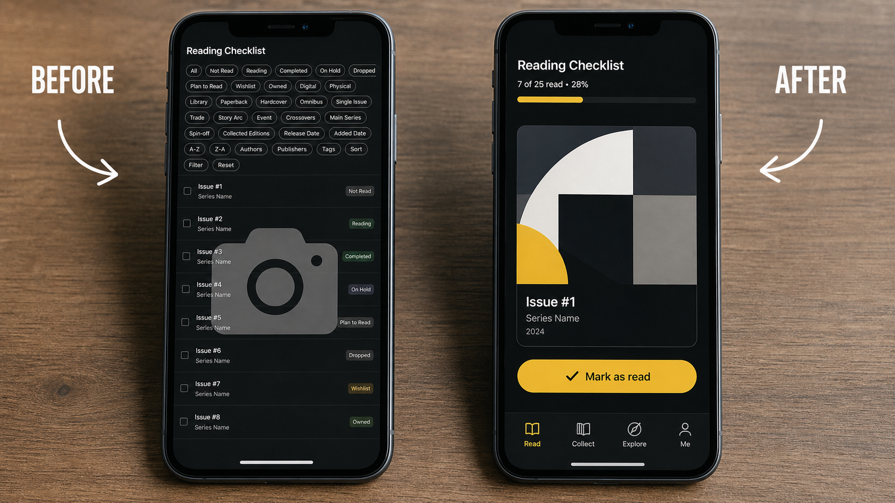
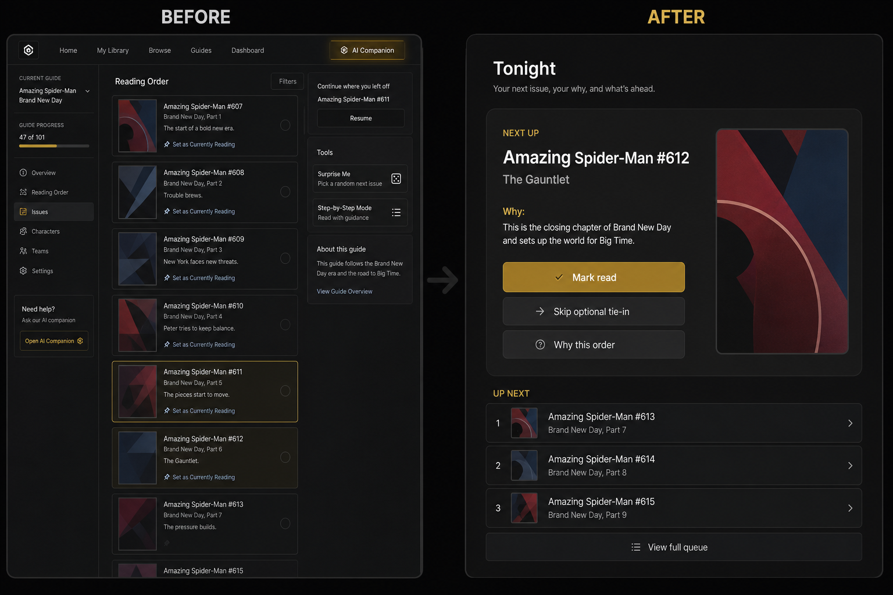
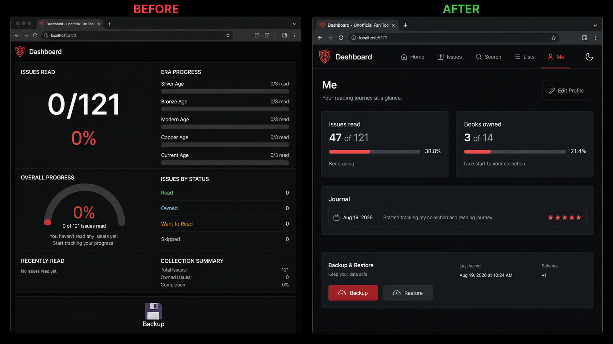

What already works — do not throw it away
- Reading spine is right: Brand New Day → Big Time → Dying Wish → Superior → Spider-Verse → Spider-Geddon.
- Side tracks are named: Civil War, Secret Wars 2015, Civil War II, 2099, Ultimate, Venom & Carnage, Web of Spider-Man.
- Primitives are right: OWN, READ, eras, must-read, Currently Reading, Surprise Me, Step-by-Step, Backup, legal disclaimer.
- Card copy is often excellent. Keep the blurbs; move them behind a spoiler veil.
Full issue inventory
Catalog / data (blocker)
| ID | Issue |
|---|---|
| D1 | Big Time #648–656 nested inside a gap of #648–697 — double-count and false “buy both”. |
| D2 | Dying Wish + Superior #1–16 + #17–31 all map to Superior Omni Vol. 1. |
| D3 | Avenging + Team-Up + Superior Vol. 2 all map to Returns Omni. |
| D4 | Worldwide gap listed as ASM 2015 #1–32 only — understates through Red Goblin. |
| D5 | Spider-Geddon is “#0–5 + tie-ins” with no issue map. |
| D6 | Header 0/121 issues vs era 0/3 read (books) — mixed units. |
| D7 | “View issues (6)” repeats on split cards of one book. |
| D8 | Prices with no date or source. |
| D9 | No ISBN / UPC / MU id / GCD id. |
| D10 | No required / recommended / skip-ok flags. |
| D11 | Events are separate apps, not tags. |
| D12 | No publication date vs story date. |
| D13 | Gap cards are ownable. |
| D14 | No reprint / printing distinction. |
| D15 | No digital-vs-print ownership (MU read ≠ shelf own). |
Deeper findings (second pass)
| ID | Finding |
|---|---|
| X1 | Expand counts look fake — ASM #546–583 is ~38 floppies, card says (8) or (6). |
| X2 | Gap card must be only the uncollected remainder (#657–665, #674–697), not a re-range of the era. |
| X3 | Must-read star almost unused (should mark New Ways to Die, Spider-Island, Go Down Swinging…). |
| X4 | Secret Invasion glued into BND Vol. 1 title instead of an optional tagged tie-in. |
| X5 | Returns omni spanning 2013–2023 is a collection fact parked on a 2018 reading-era row. |
| X6 | No conflict UI when the same issue is “owned” via two cards. |
| X7 | Family Tree / Web of Destiny will drift unless they use the same IDs. |
| X8 | No MU-vs-shelf continue path. |
| X9 | No League of Comic Geeks / CLZ import. |
| X10 | No catalog changelog — users will think their checks moved. |
| X11 | 121 must be issues.length, never a hardcoded headline. |
| X12 | Avenging / Team-Up as era chips over-weight Otto side books. |
| X13 | Blurbs spoil Dying Wish and Peter’s return — need a spoiler veil. |
| X14 | Red/black theme will fight real covers; test both themes once images exist. |
| X15 | Single-page dump loads Civil War through 2099 even if you only wanted BND. |
| X16 | No agent-safe source layout — three agents will thrash one HTML file. |
Links, IA, progress, mobile, AI, ops
- L1–L7 — Every cover is a camera emoji. Outbound links search the raw card title. Four equal “search Marvel” buttons. Cover Gallery cannot work until IDs exist. Naive hotlinks will 403 and are legally risky.
- N1–N9 — 16 top-level destinations; three different “order” tools; no search; Surprise Me / Step-by-Step unlabeled vs the tab pile.
- P1–P12 — Backup without Restore; no schema version; no undo; currently reading buried on the card; Surprise Me can recommend a gap.
- U1–U12 / M1–M5 — Emoji icons, tiny hit targets, nav wraps on a phone, no sticky current book. This is a couch + phone app.
- A1–A5 — AI is only worth a Netlify function grounded in
issues.json. Otherwise a deterministic Tonight panel. - O1–O10 — Disclaimer is good. This GitHub repo is not the site. Split
data/from UI. Audit in CI.
Target data model (shared by every agent)
One issue, one READ. OWN lives on collections. Gaps cannot be owned. Progress = readIssueIds.length / issues.length. A second meter counts books owned. Nav has at most five primary items. No outbound URL may be a concatenated title search.
How several agents stay stronger than one Claude
- Catalog owns
data/issues.jsonandcollections.json— not CSS. - Audit owns CI: overlaps, fake expand counts, missing IDs. Fail the build.
- App owns Read / Collect / Explore / Me. Never hardcode issue facts.
- Persist owns export, restore, schemaVersion, undo, currently-reading chip.
- Visual owns type, a11y, cover strategy.
- Links owns GCD / MU / ISBN resolution only.
Build order: BND → Geddon catalog first. Then audit. Then Read + Collect. Then persist. Then visual. Explore packs (2099, tree, CW) last.
Eight before & afters
Concept art reconstructed from the live DOM — not photographs of Netlify (this environment cannot screenshot the deployed tab).
01 · Home header

Lead with the book in your hand
Stop opening on a slogan, 0/121 with no twin meter, and sixteen tools. After: unofficial badge, issues read + books owned, and “Start at Amazing Spider-Man #546.”02 · Navigation

Four verbs, not sixteen destinations
Events become filters under Explore. Search (“Jump to Grim Hunt”) is a first-class control.03 · Collection card

One scannable card
Cover, title, range, two-line why, OWN, READ. The five search links drop one level down.04 · Covers and links

No more camera emoji
Store GCD / MU / ISBN. Designed posters if art cannot be hosted. One button that actually lands somewhere.05 · Data overlaps

One book, many issues, one read state
The #1 trust killer: Superior Vol. 1, Returns, and Big Time counted two or three times. After: OWN on the collection, READ on each issue.06 · Mobile

Couch-and-phone first
Bottom tabs, 44px Mark read, sticky current issue. If it is not thumbable, the list will go stale and the tracker dies.07 · Next up

Tonight replaces four features
Currently Reading + Step-by-Step + Surprise Me + AI Companion collapse into one honest queue: next issue, why, skip optional, mark read.08 · Stats and backup

Two meters and a Restore button
Issues read ≠ books owned. Backup and Restore are peers. schemaVersion + last-saved timestamp so the next agent cannot silently migrate you into a hole.Definition of done for v2
- Header total ===
issues.length - Zero overlapping ownable collections without a shared-issue map
- Gaps cannot be marked OWN
- Expand count === issueIds.length
- No leftover camera placeholders
- No search-string outbound links
- Four primary nav items
- Sticky currently-reading + Next 3
- Export + Restore + schemaVersion + undo
- Spoiler veil on by default
- Audit script in CI
- Source in git; data split from UI